Галереи референсов
ReferoИдея кнопки «Сохранить» при просмотре скрина
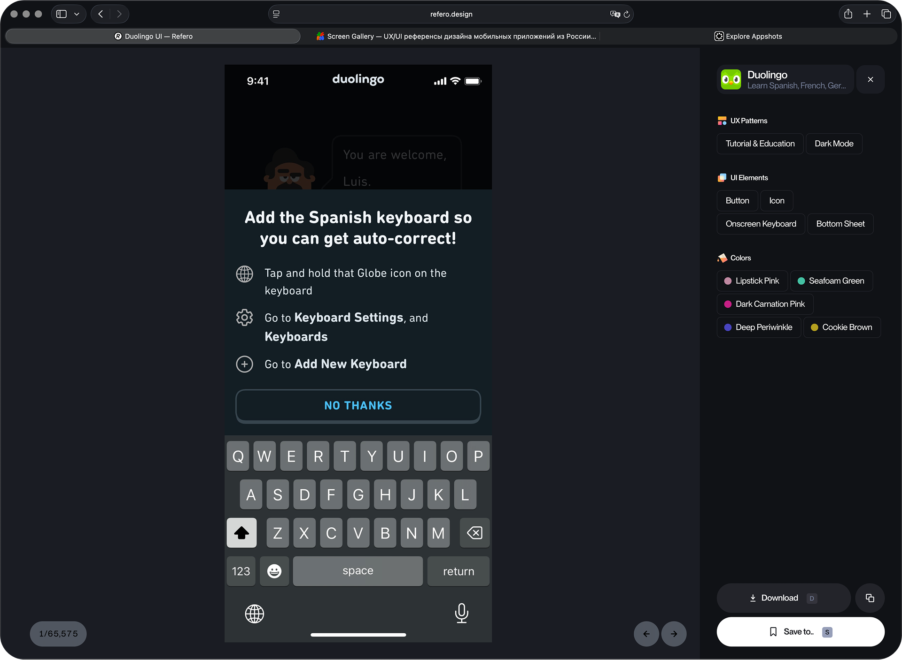
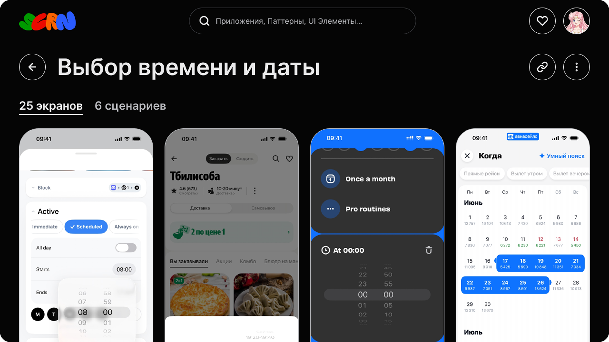
Дизайнеры приходят в галерею под конкретную задачу и уносят найденное во внешние доски. Собранное оставалось за пределами сервиса: с каждой новой задачей поиск начинался заново
Найденные экраны, флоу и приложения приходится сохранять вне галереи и собирать вручную. К референсам сложно вернуться, дополнить или передать их коллеге
Создать в Screen Gallery инструмент для сохранения и сортировки референсов
Спроектировала избранное и коллекции: пользователь может сохранять экраны, флоу и приложения, а затем группировать нужные материалы в подборки
| Фича заметна и понятна тем, кто приходит в галерею впервые | 12 минут |
|---|---|
| Пользователи сразу понимают, куда хотят положить референс, и не разбирают сохранённое позже | 93% |
| В большинстве случаев следующее сохранение отправляется в ту же коллекцию | 75% |
| Feature Adoption Rate | Фича живёт месяц, охват пока небольшой, и отдельная задача сейчас — рассказать о ней тем, кто зарегистрировался до релиза |
| Название | Гипотеза | Метрики |
|---|---|---|
| Сохранение референсов | Если пользователь сможет сохранять экраны, флоу и приложения в избранное внутри Screen Gallery, он будет собирать нужные референсы в сервисе, а не переносить их в Figma | Ключевая: Feature Adoption Rate — доля активных пользователей, которые сохранили хотя бы один объект.Дополнительная: Repeat Usage Rate избранного — возвращаются ли пользователи к сохранению референсов в следующие рабочие сессии |
| Сортировка по коллекциям | Если пользователь сможет группировать сохранённые референсы в коллекции, он будет собирать подборки под конкретные рабочие задачи и быстрее возвращаться к ним | Ключевая: Collection Creation Rate — доля пользователей избранного, создавших хотя бы одну коллекцию.Дополнительная: Repeat Usage Rate коллекций — возвращаются ли пользователи к созданным подборкам |
| Шаринг коллекций | Если коллекцией можно поделиться по ссылке, пользователи будут передавать готовые подборки коллегам через Screen Gallery | Ключевая: Share Rate — доля пользователей, поделившихся хотя бы одной коллекцией.Дополнительная: доля ссылок, по которым открыли коллекцию |
| Совместное редактирование в Team | Если участники Team-подписки смогут редактировать общие коллекции, команда будет работать с одной актуальной подборкой референсов вместо личных копий | Ключевая: доля общих коллекций, в которых действия совершили два и более участника команды.Дополнительная: Repeat Usage Rate общих коллекций |
| Название | Гипотеза | Метрики |
|---|---|---|
| Удержание подписчиков | Если избранное, коллекции и совместная работа станут частью рабочего процесса, пользователи будут чаще продлевать подписку | Ключевая: Renewal Rate.Дополнительная: Repeat Usage Rate избранного и коллекций среди пользователей перед продлением |
Проанализировала галереи референсов: как устроены сохранение работ, список избранного и сценарии возвращения к сохранённым материалам
На основе продуктовой гипотезы определила логику избранного в Screen Gallery: путь от добавления работы до просмотра сохранённых референсов
Изучила интерфейсные решения: кнопки, тосты, модалки добавления в коллекции, создания коллекций. Это помогло выбрать понятные паттерны для первого дизайн-концепта
Собрала несколько вариантов макетов, обсудила их с фаундером и зафиксировала итоговое направление
Собрала финальные макеты в дизайн-системе Figma, подготовила состояния интерфейса и передала решение разработчику
Участвовала в дизайн-ревью реализованной функции. Спустя месяц после запуска собираем метрики и планируем следующие улучшения сценария избранного
Мы хотели сделать добавление референсов в Избранное в одно действие, полагая, что важнее быстро накидать в одну кучу. Но первая аналитика показала, что мы тут ошиблись и важно дать пользователю возможность сразу распределять рефы по коллекциям
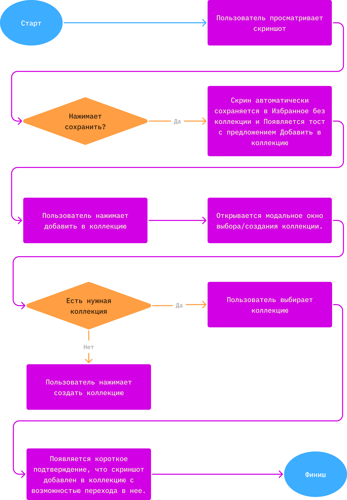
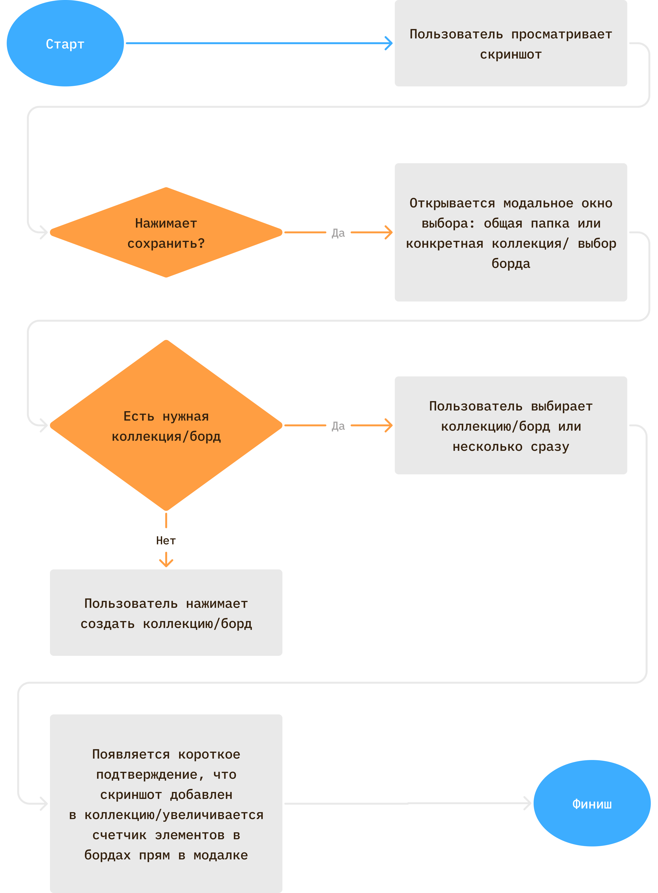
| Mobbin | Refero | Appshots |
|---|---|---|
| Что можно сохранять | ||
| Приложения, отдельные экраны и флоу. На странице Saved сохранённые материалы также группируются по приложениям | Сохранение скринов | Коллекции поддерживают приложения, экраны, UI-элементы и флоу |
| Сохранение скрина из ленты | ||
| В ленте экранов приложения кнопка Save появляется на карточке скрина при наведении | Нет данных | В ленте экранов открытого приложения пользователь отмечает скрин чекбоксом. После выбора появляется нижняя панель, где можно указать коллекцию и нажать Save |
| Сохранение открытого скрина | ||
| Кнопка Save расположена под экраном в просмотрщике | Кнопка Save to… расположена внизу боковой панели просмотрщика | Нет данных |
| Сохранение сценария | ||
| Сценарий можно сохранить при его открытии | Нет такой функции | Нет данных |
| Сохранение приложения | ||
| Приложение можно сохранить из ленты приложений или со страницы открытого приложения | Нет такой функции | В ленте приложений пользователь отмечает карточку приложения, выбирает одну или несколько коллекций и нажимает Save |
| Что происходит после нажатия | ||
| Открывается меню: экран можно сохранить в All saved, добавить в существующую коллекцию или перейти к созданию новой | Открывается панель Bookmarks со списком бордов. Один скрин можно одновременно отметить в нескольких бордах | Внизу экрана появляется панель с выбором коллекции. Список можно раскрыть, отметить одну или несколько коллекций либо создать новую |
| Подтверждение сохранения | ||
| После сохранения появляется тост с подтверждением и действием Add comment. Переход в целевую коллекцию не предлагается | Счётчик элементов в выбранном борде обновляется прямо в панели, подтверждая успешное сохранение. О переходе в борд из этого состояния нет данных | После сохранения появляется сообщение Saved to collection с кнопкой View для перехода в коллекцию |
| Создание коллекции | ||
| В меню сохранения пользователь выбирает Create collection. В модальном окне задаёт название, при необходимости добавляет описание и включает приватность, затем нажимает Create. После создания экран сохраняется в новую коллекцию | Из панели Bookmarks можно открыть Create Board, задать название и сразу создать новый борд | Новую коллекцию можно создать прямо во время сохранения: в панели Add to Collection выбрать Add to new collection, указать название и нажать Save |
| Просмотр и организация сохранённого | ||
| На странице Saved коллекции показаны карточками с обложкой, названием и количеством элементов. Есть поиск по коллекциям, переключатели Mobile / Web / Sites, группировка по приложениям и общий раздел All saved со вкладками Screens и Flows | Внутри борда отображается сохранённый скрин. О дополнительных способах организации материалов нет данных | Коллекции представлены карточками с названием, обложкой и счётчиками материалов. Внутри есть вкладки Apps, Screens, UI Elements и Flows |
| Командная работа | ||
| В Team-плане коллекции можно создавать и пополнять совместно, а также делиться ими внутри команды | Нет данных | Нет данных |
| Переход в избранное с главной | ||
| Через иконку закладки Saved в верхней навигации | Через пункт Bookmarks в левой навигационной панели | Через пункт Collections в бургер-меню |
| Что можно сохранять | Сохранение из ленты | Сохранение открытого скрина | Сохранение сценария | Сохранение приложения | После нажатия | Подтверждение сохранения | Создание коллекции | Просмотр сохранённого | Командная работа | Переход в избранное с главной | |
|---|---|---|---|---|---|---|---|---|---|---|---|
| Mobbin | Приложения, отдельные экраны и флоу. На странице Saved сохранённые материалы также группируются по приложениям | Кнопка Save появляется на карточке скрина при наведении | Кнопка Save расположена под экраном в просмотрщике | Сценарий можно сохранить при его открытии | Приложение можно сохранить из ленты приложений или со страницы открытого приложения | Открывается меню: All saved, существующая коллекция или создание новой | Тост подтверждает сохранение и предлагает Add comment. Перехода в целевую коллекцию нет | В меню сохранения пользователь выбирает Create collection, задаёт название, при необходимости добавляет описание и включает приватность. После Create экран сохраняется в новую коллекцию | Карточки коллекций с обложкой, названием и счётчиком. Есть поиск, Mobile / Web / Sites, группировка по приложениям и All saved со вкладками Screens / Flows | В Team-плане коллекции можно совместно создавать, пополнять и передавать команде | Иконка закладки Saved в верхней навигации |
| Refero | Сохранение скринов | Нет данных | Кнопка Save to… внизу боковой панели просмотрщика | Нет такой функции | Нет такой функции | Открывается панель Bookmarks. Один скрин можно одновременно отметить в нескольких бордах | Счётчик элементов в борде обновляется, подтверждая сохранение. О переходе в борд из этого состояния нет данных | Из панели Bookmarks можно открыть Create Board, задать название и создать новый борд | Внутри борда отображается сохранённый скрин. О дополнительных способах организации материалов нет данных | Нет данных | Пункт Bookmarks в левой навигационной панели |
| Appshots | Приложения, экраны, UI-элементы и флоу | В ленте экранов открытого приложения пользователь отмечает скрин чекбоксом, выбирает коллекцию в нижней панели и нажимает Save | Нет данных | Нет данных | В ленте приложений пользователь отмечает карточку приложения, выбирает одну или несколько коллекций и нажимает Save | Внизу экрана появляется панель с выбором коллекции. Можно отметить одну или несколько коллекций либо создать новую | Сообщение Saved to collection подтверждает сохранение; кнопка View ведёт в коллекцию | В панели Add to Collection можно выбрать Add to new collection, указать название и нажать Save | Карточки со счётчиками; внутри вкладки Apps, Screens, UI Elements и Flows | Нет данных | Через пункт Collections в бургер-меню |

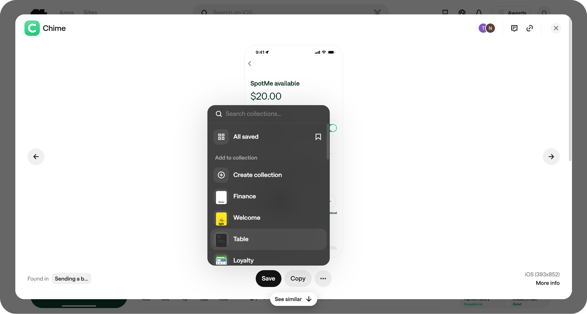
Создание новой коллекции
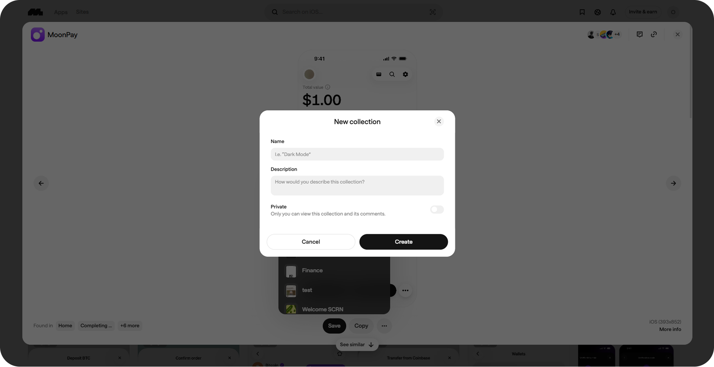
Обложка коллекции и подпись снизу
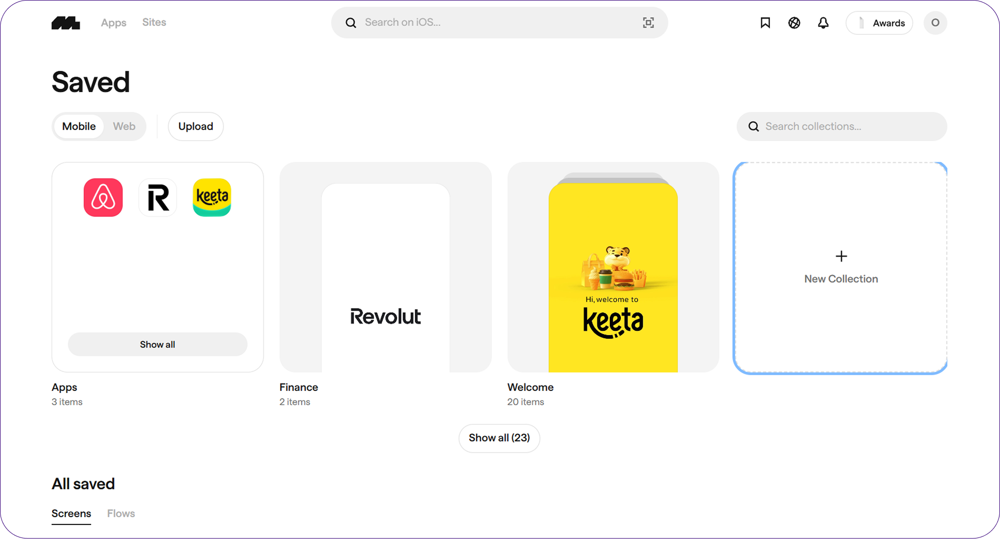
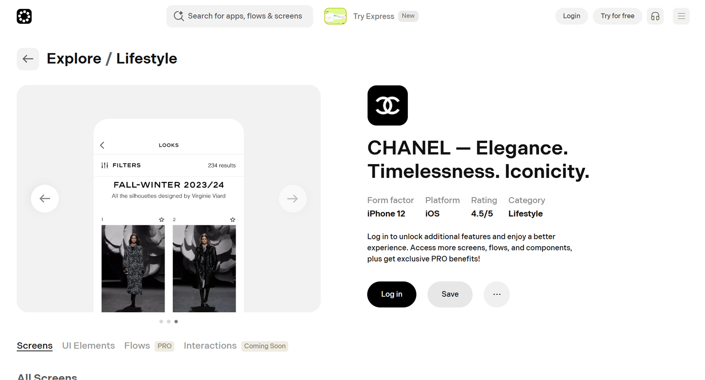
Просмотр коллекций
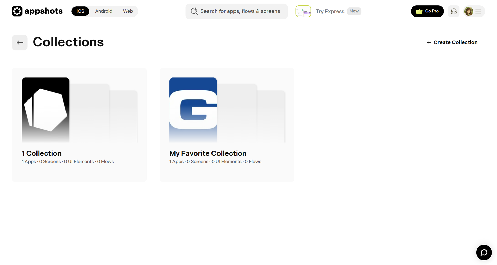
Навигация внутри коллекции
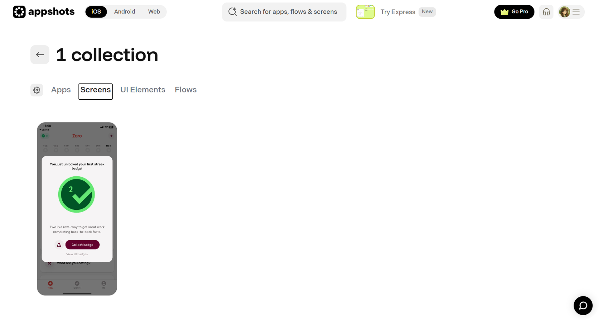
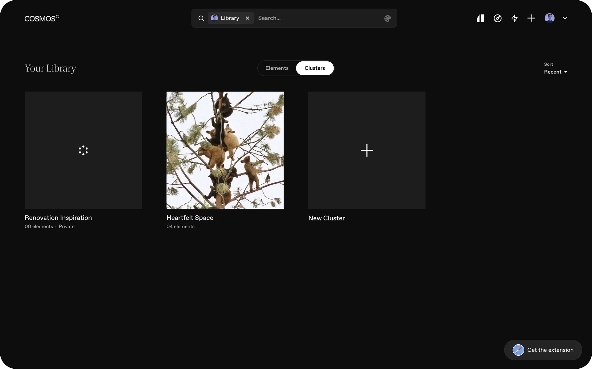
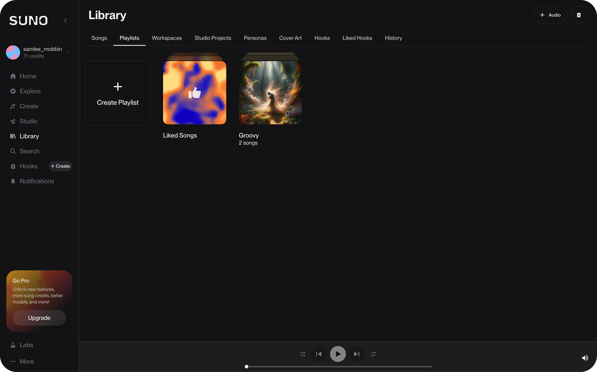
Добавление экрана в избранное
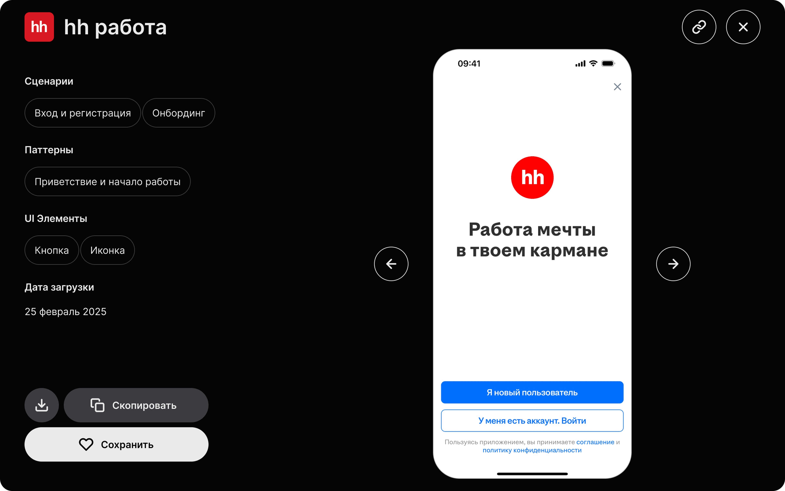
А вот и кнопочки, вдохновлённые Refero
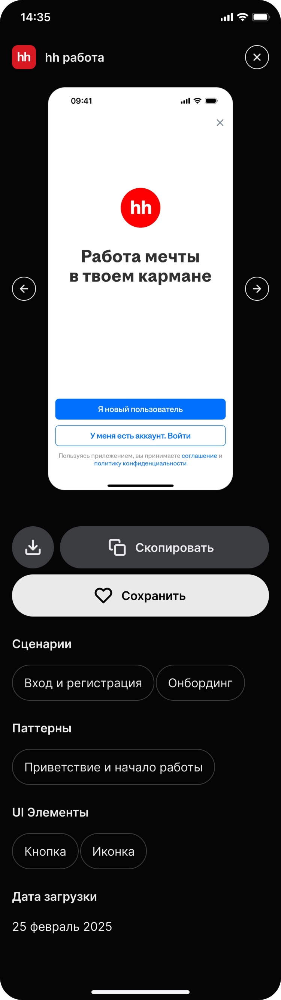
Добавление сценария в избранное
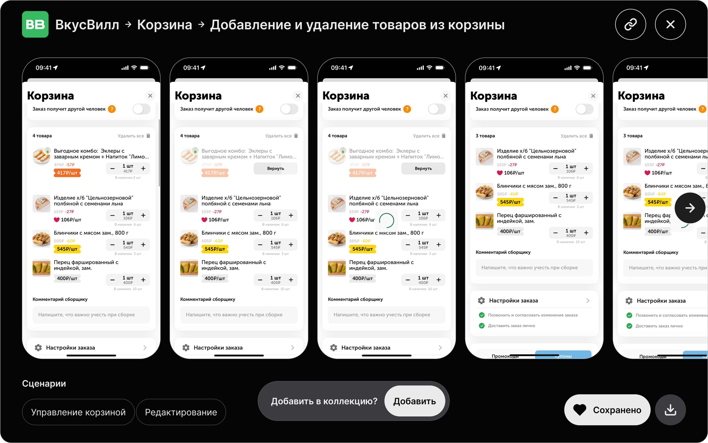
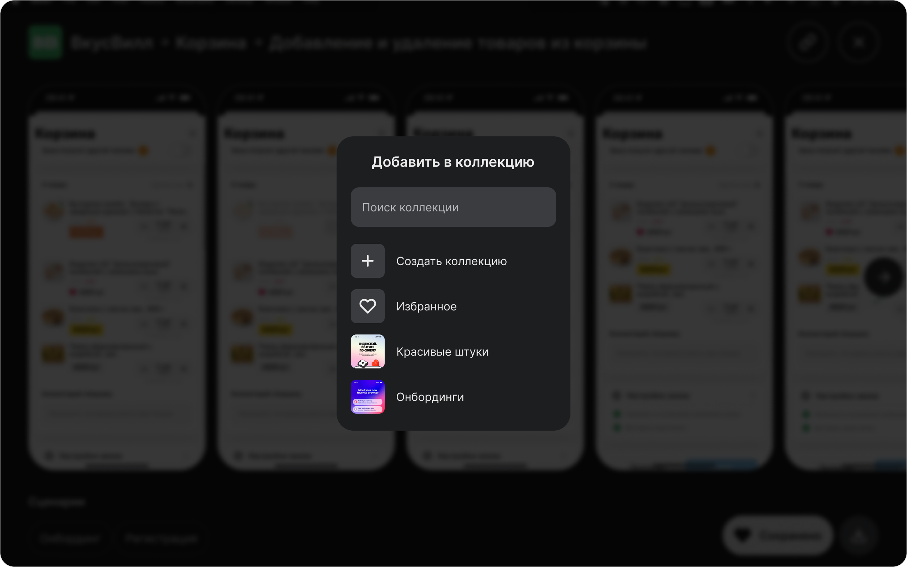
При сохранении в избранное можно сразу закинуть реф/флоу в коллекцию
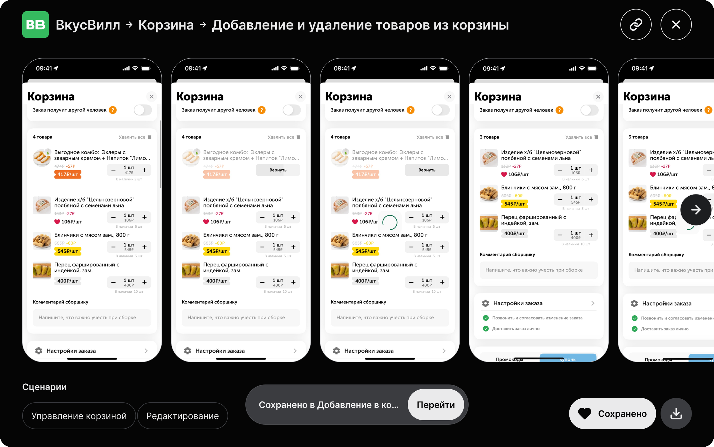
Сообщение успеха дополнено кнопкой перехода в коллекцию
Добавление приложения в избранное
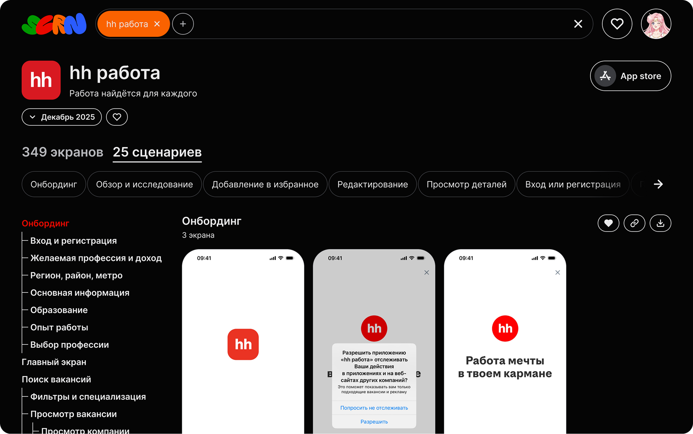
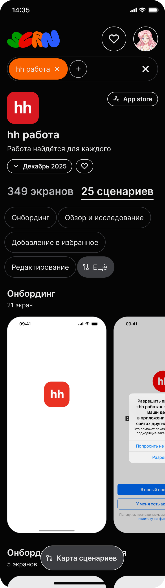
Новые пользователи доходят до первого сохранения за 12 минут после регистрации — значит, фича заметна и понятна тем, кто приходит в галерею впервые
62% пользователей, попробовавших избранное, сохранили больше одного объекта. Почти треть из них перешла к коллекциям — пользователи не только сохраняют отдельные референсы, но и начинают собирать подборки под задачу
Воспользовались новой функцией
Сохранили больше одного объекта
Перешли к коллекциям
Между сохранением и добавлением в коллекцию обычно проходит 3 секунды. Это означает, что пользователи сразу понимают, куда хотят положить референс, и не разбирают сохранённое позже
В 75% случаев следующее сохранение отправляется в ту же коллекцию
96% сохранений происходят в будни: Screen Gallery используют как рабочий инструмент для конкретной задачи
Сценарии сохраняют почти исключительно из банковских приложений, а фудтех сохраняют экранами
Упрощаем путь в коллекцию: при сохранении предлагаем список коллекций с предвыбранной последней использованной коллекцией (3 из 4 сохранений идут в ту же коллекцию)
Если пользователь ещё ничего не сохранил, объясняем, как работает функция, и предлагаем перейти к поиску референсов
Если сохранения уже есть, показываем похожие экраны и другие материалы из тех же приложений, чтобы пользователь мог продолжить поиск и дополнить подборку
Первый месяц слишком короткий, чтобы оценивать возвращаемость и влияние на подписку. Эти эффекты продолжаем измерять в следующем цикле